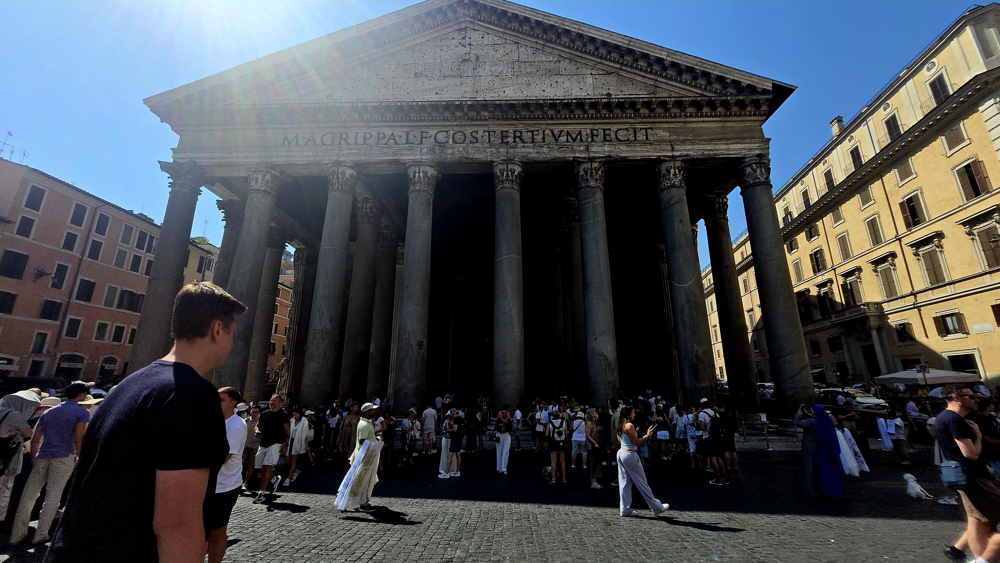

ROME
The Eternal City
Text generated with ChatGPT • Images photographed by me

About Rome
Rome is the capital of Italy and a city rich in history, art, and culture. Known as the “Eternal City,” Rome is home to ancient landmarks, beautiful architecture, and centuries of history. Its unique blend of the past and present makes it one of the world's most fascinating cities to explore.


Exploring the City
Exploring Rome means discovering something new around every corner. From the ancient Colosseum to the beautiful Trevi Fountain, the city is filled with iconic landmarks and charming streets. Visitors can enjoy historic sites, Italian cuisine, art, and the lively atmosphere that makes Rome unforgettable.